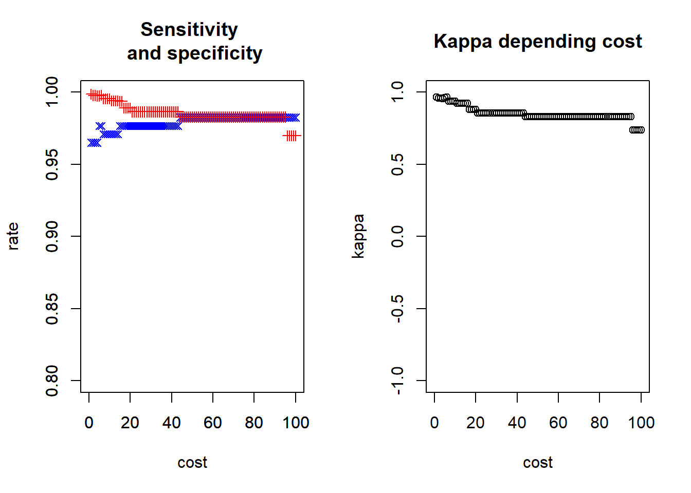
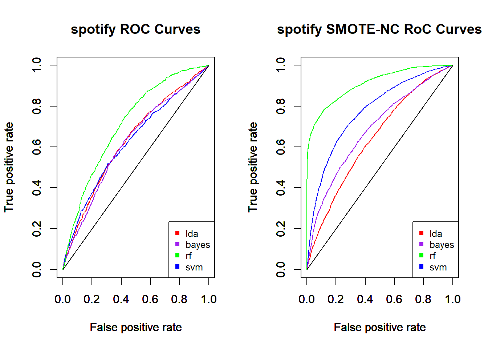
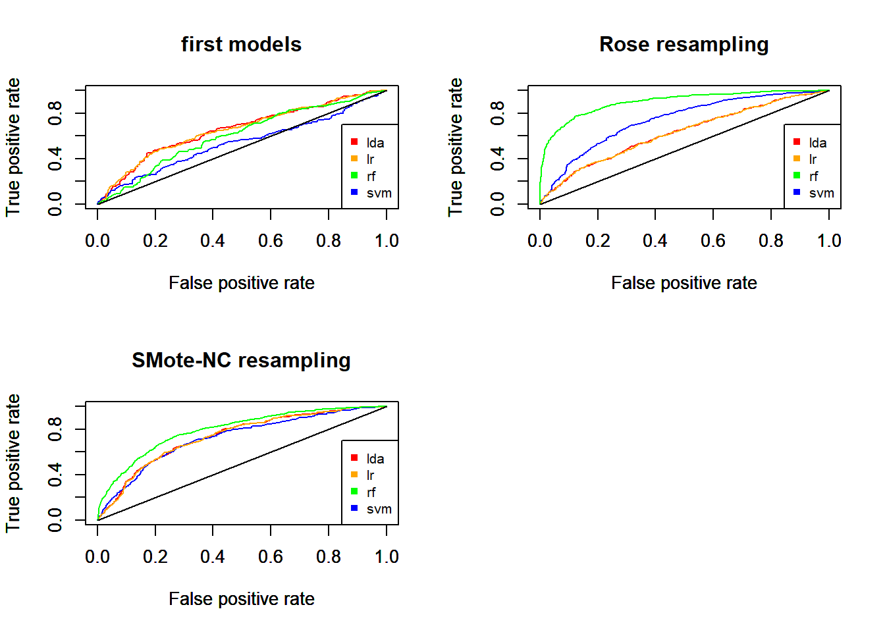
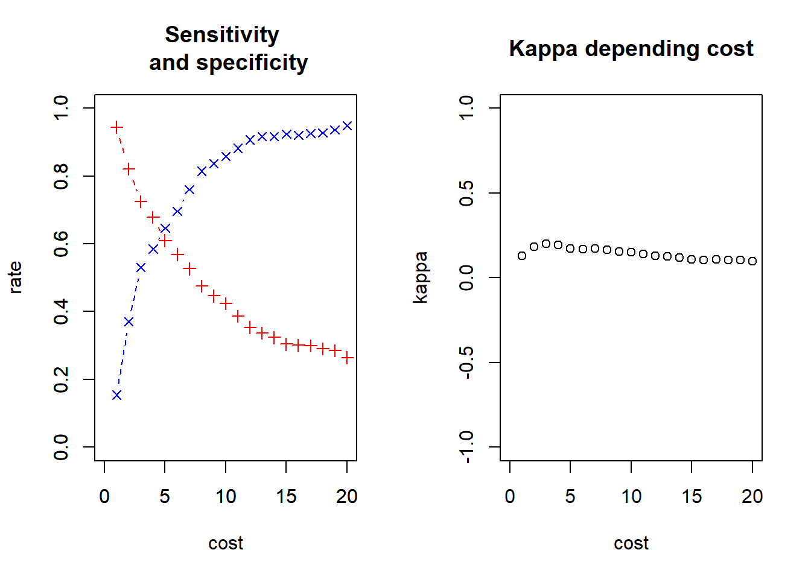
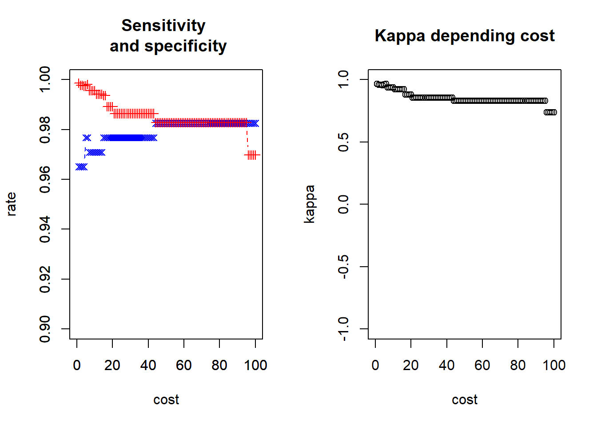
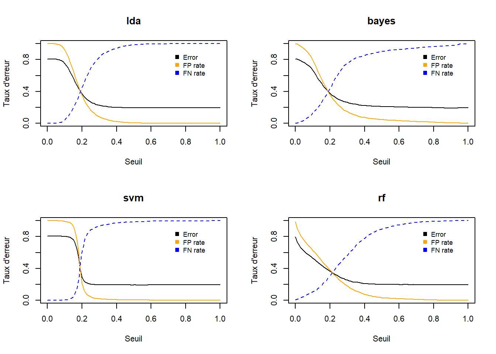

Chapter 5 Applications
5.1 Introduction
In order to illustrate and discuss the different remedies proposed in the previous chapter, we are handling each on different dataset. Hence we can make comparisons and try to measure their efficiency.
- Few words about classifiers:
Our first choice as classifiers was to use LDA, LR, RF and SVM. having ascertained that LDA et LR give very similar results, we decide to substitute LR by naives bayes’classifier in order to proposed a richer experience. Notice that we first try to use glmnet instead of glm but it doesn’t deliver better results (see spot.rmd). It is not unexpected that LR and LDA give nearly predictions, indeed they both are linear models and litteracy confirms they both give quite similar results.
- Few words About the code :
We don’t introduce here all the manipulations done on the datasets, either the preparation of the dataset. You can find them in this github repositery wich contains the .rmd for each dataset. In this repositery, you can also find the .R file which contains also the functions we code in order to avoid to many repetition in the code. At last, the alldat.Rdata stocked all objects built in the .rmd, it is used here to call the object we need. A fourth data set is in development that is not use here (creditcard).
Our first think was to put the tuning of parameters inherent to classifiers as a track of remedies. We eventually decided to launch our first models with the parameters already tune. First because there was no significant improvement in detection power, then because svm models was unable to give results with the basic parameters.
To illustrate some remdies introduced above, We choose three dataset with different level of imabalanced.
Let’s briefly presents those datasets:
- Spotify : a database including songs from spotify servers with categorical (about the qualification genre) and numerical predictors (about sound aspect of the songs computed by algorithm). Here the predicted variable is the popularity (is low /is not low).
- Recidivism : a database containing arrested people and some caterogical predictors about their identity and judicial priors.
- Hacked : a database concerning system and hacked tentative. a variable multiple_offense with “1” if hacked and “0” if not.
The table 5.1 shows the priors of the depending class for the three datasets.
| spot | hack | recid | |
|---|---|---|---|
| 0 | 0.807562076749436 | 0.954514596062458 | 0.88374113218474 |
| 1 | 0.192437923250564 | 0.0454854039375424 | 0.11625886781526 |
5.2 First Models
We start to compute classifiers algorithm .For now, we just want to observe results with basic parameters. This first computation can be used as a start reference to measure the remedies tested later.
| 0 | 1 | Sum | 0 | 1 | Sum | |
|---|---|---|---|---|---|---|
| rf | bayes | |||||
| 0 | 4431 | 975 | 5406 | 4373 | 983 | 5356 |
| 1 | 147 | 115 | 262 | 205 | 107 | 312 |
| Sum | 4578 | 1090 | 5668 | 4578 | 1090 | 5668 |
| lda | svm | |||||
| 0 | 4559 | 1078 | 5637 | 4566 | 1075 | 5641 |
| 1 | 19 | 12 | 31 | 12 | 15 | 27 |
| Sum | 4578 | 1090 | 5668 | 4578 | 1090 | 5668 |
The table 5.2 shows the confusion matrix resulting to the four classifiers used on the spotofy dataset. We observe the unabilty to properly predict the unpopular songs. A look on the metrics (table5.3) sharps this observation.
| accuracy | FNrate | TPrate | kappa | PrecisionPPV | Fscore | |
|---|---|---|---|---|---|---|
| rf | 0.8020466 | 0.8944954 | 0.1055046 | 0.1032829 | 0.4389313 | 0.1701183 |
| Bayes | 0.7904023 | 0.9018349 | 0.09816514 | 0.07332293 | 0.3429487 | 0.1526391 |
| lda | 0.8064573 | 0.9889908 | 0.01100917 | 0.01088917 | 0.3870968 | 0.02140946 |
| svm | 0.8082216 | 0.9862385 | 0.01376147 | 0.01772557 | 0.5555556 | 0.02685765 |
First we note that accuracy is very good, wich confirms accuracy is not a relaible metrics concerning imbalance dataset. A simple view on Detection power(TPr) shows that we don’t achieve to predict what songs are very unpopular. FN rate is obviously good because of the imblalanced ratio.
Let see the plot curve for all datasets.

Spotify and recid faces a real problem, no classifiers is able to make good predictions. Hacked data set has pretty good results for a first try. It is possible that the nature of the data explains a part of this gap. Maybe variables can have some colinerarity or just don’t have a real dependency for the dependant variable.
| accuracy | FNrate | TPrate | kappa | PrecisionPPV | Fscore | |
|---|---|---|---|---|---|---|
| rf | 0.9949815 | 0.05813953 | 0.9418605 | 0.9419781 | 0.9473684 | 0.9446064 |
| Bayes | 0.9477021 | 0.872093 | 0.127907 | 0.1597342 | 0.3142857 | 0.1818182 |
| lda | 0.9537771 | 0.7732558 | 0.2267442 | 0.287576 | 0.4814815 | 0.3083004 |
| svm | 0.9635499 | 0.7034884 | 0.2965116 | 0.4098061 | 0.75 | 0.425 |
On table 5.4, we can see that only RF has very good results. Detection power and Fscore allows to judge the performance classifiers, contrary to accuracy or FN rate which are not usefull here. RF has the better results, In second position comes svm, even if he detects only a third among True positive, its quite a good results for a first try with an imbalanced data set, and Fscore ank kappa are not so bad.
5.3 Preprocessing: Resampling methods
As we can see with the function resamp (in Funclib.R of thisgithub repositery )the funclin.R and the .rmd, we try many resampling with different method. As the smote methods seems to us pertinent with this approach of oversampling with some logic, we try some development as adasyn or BLSMOTE. We made some test with random up sampling and downsizing which don’t stands here.
Note that the original smote algorithm is only for numerical variable. Some databases have few or no numerical variable so it is not an issue but a dataset as recid (with many caterogicla variable) asks to act on this variable. We could try to transform them as numerical but we choose to use SMoteNC, which is developed to deal with bot numerical and categorical variable.
Table 5.5 shows the results of SMOTE-NC resampling.
| accuracy | FNrate | TPrate | kappa | PrecisionPPV | Fscore | |
|---|---|---|---|---|---|---|
| rf | 0.8278724 | 0.2075142 | 0.7924858 | 0.6557449 | 0.8528444 | 0.821558 |
| Bayes | 0.6241809 | 0.2647444 | 0.7352556 | 0.2483617 | 0.6016086 | 0.6617517 |
| lda | 0.6021188 | 0.3934032 | 0.6065968 | 0.2042377 | 0.6012124 | 0.6038926 |
| svm | 0.7035824 | 0.2505461 | 0.7494539 | 0.4071647 | 0.6864746 | 0.7165831 |
On graphics below, Lets compare RocCurve before and after smote resampling. This graphics illustrate a situation we faces a lot during our works. It often occurs with all smotefamily resamplers and Upsampling. We clearly see a global improvement. Random forest leads the course, following by SVM.


5.4 Direct cost sensisitive learnig
Using a decision tree with a cost matrix give interesting results. A question we ask is : what is the optimal cost to give at FP and FN rate? Intuitively, we want to use the ratio of priors, for example, spotify priors are approximately 0,8 and 0,2 so we use c(1,0) = 1 and c(0,1) = 4, or with recid c(0,1) = 19 (0.95/0.005).
The graphics below shows evolution of sensitivity and specificity in function of the given cost.
The first one confirms that priors can be a good choice to choose the cost for confusion matrix. Globally, CART with cost has improve the predictions in comparison of first models. Not as good as resampling, but it gives substantial improvement. Kappa stills a bit low. A look on the left graph can help users to choose a cost slightly on the right to improove detection power if the cost in specificity is not too expensive for his application of the prediction.

Here, CART gives excellent result, as shows the kappa measure, still high which means results are not due to chance. Beside, TP and TN curves shows that a value between 50 and 90 seems optimal to maintain a high level of detection power and a low level of false alarm and stay balanced between them.

5.5 Post processing Threesholding
In order to choose a good threeshold for the probabilities, we first vizualize the evolution of the three kind of errors. Those graphics will help us to choose a good threshold. We want that global error stays as high as possible. We also want a threeshold where FPrate and FNrate are closed to their intercept. At last we prefer situate on the right of the intercept because we privilegies FPrate to FNrate. the softer the slope is, the easier we can make gains on FP without looing too much in FN and accuracy. Hence, bayes and RF are better here for users who would try different threshold.

Once we have choosen the better value depending our attempts, we can observe results in table 5.6 and reshape with another threshold if necessary.
| accuracy | FNrate | TPrate | kappa | PrecisionPPV | Fscore | |
|---|---|---|---|---|---|---|
| rf | 0.6328511 | 0.3100917 | 0.6899083 | 0.2073542 | 0.3014028 | 0.4195258 |
| Bayes | 0.6264996 | 0.440367 | 0.559633 | 0.1438748 | 0.2714731 | 0.3655978 |
| lda | 0.6284404 | 0.4504587 | 0.5495413 | 0.1412709 | 0.270551 | 0.3625908 |
| svm | 0.7115385 | 0.6082569 | 0.3917431 | 0.1619352 | 0.305218 | 0.3431097 |
Once again, we observe a remrquable improvement in comparison of the first try. This threshold can be choosed by someone whants to keep accuracy above 60 percent and keep a balanced between specificity an sensitivity. If the user wants to win some detection power because he has still some margin in terms of specificity and accuracy, he can raise a bit the threshold.